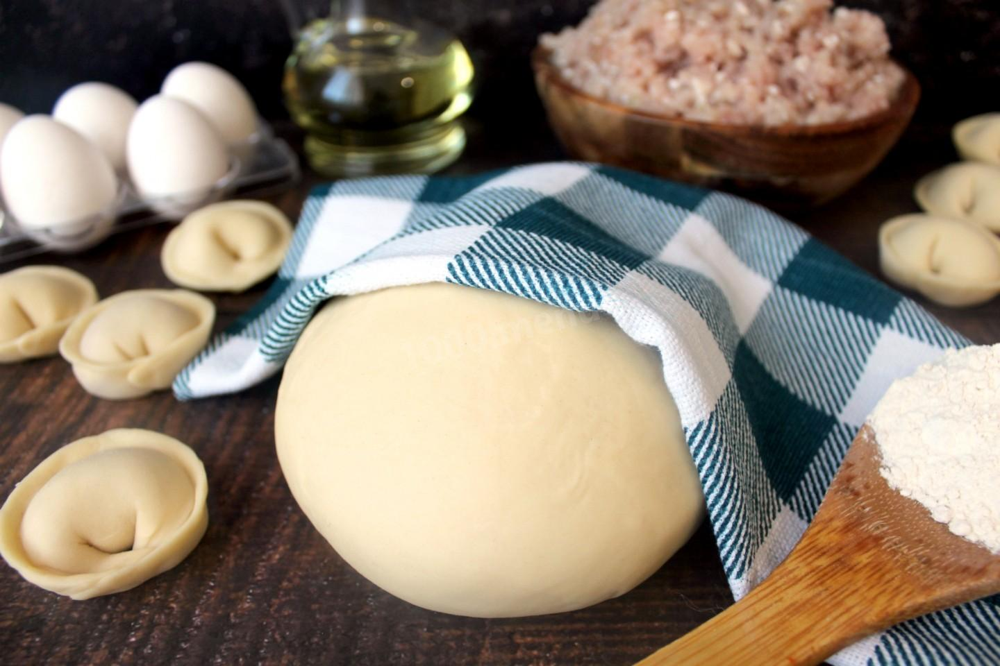

Самые наикрутейшие рецепты
1. Пельмени из теста на воде, минералке, молоке.

Для приготовления теста для пельменей вам понадобятся следующие ингредиенты:
- 300 мл кефира
- 1 ч.л. соли
- 450 г муки
Пошаговый рецепт теста для пельменей:
- В миске смешайте кефир и соль.
- Постепенно добавляйте муку, замешивая тесто ложкой или руками.
- Выложите тесто на стол, посыпанный мукой, и замесите его до эластичности.
- Скатайте тесто в шар, заверните в пищевую пленку и оставьте на 30 минут.
- Раскатайте тесто в тонкий пласт и вырежьте кружочки для пельменей.
Источник: 6 лучших рецептов теста для пельменей